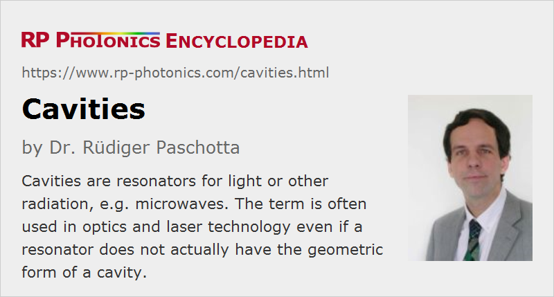

Cavities
Definition: resonators for light (or for microwaves)
Alternative term: resonators
German: Kavitäten, Resonatoren
Categories: general optics, optical resonators
How to cite the article; suggest additional literature
Author: Dr. Rüdiger Paschotta
Optical resonators are often called cavities. This term has been taken over from microwave technology, where resonators really look like closed cavities, whereas optical resonators normally have an “open” kind of setup, with reflecting surface only at few locations. That difference in geometry is related to the fact that optical resonators are usually very large compared with the optical wavelength, whereas microwave cavities are often not much longer than a wavelength, so that diffraction effects are much stronger.
Only so-called optical microcavities have dimensions in the micrometer or even sub-micrometer regime, and can tightly enclose a light field in all directions. Microcavities can be realized e.g. with tiny semiconductor or glass structures, such as microtoroids, or as defect structures in photonic crystals.
There are also spherical resonators, supporting the so-called whispering gallery modes; for such resonators, the term cavities is also quite appropriate.
Even though the term “cavity” is often not completely appropriate, as explained above, many related terms are based on it. Examples are laser cavities (laser resonators), cavity modes (resonator modes), cavity dumping and cavity design (resonator design).
The two basic types of optical cavities are:
- standing-wave (or linear) cavities, where light bounces back and forth between two end mirrors
- ring cavities (ring resonators), where the light can do round trips in two different directions
The article on optical resonators contains more details.
Questions and Comments from Users
Here you can submit questions and comments. As far as they get accepted by the author, they will appear above this paragraph together with the author’s answer. The author will decide on acceptance based on certain criteria. Essentially, the issue must be of sufficiently broad interest.
Please do not enter personal data here; we would otherwise delete it soon. (See also our privacy declaration.) If you wish to receive personal feedback or consultancy from the author, please contact him e.g. via e-mail.
By submitting the information, you give your consent to the potential publication of your inputs on our website according to our rules. (If you later retract your consent, we will delete those inputs.) As your inputs are first reviewed by the author, they may be published with some delay.
See also: optical resonators, resonator design, resonator modes, stability zones of optical resonators, reference cavities, free spectral range, finesse, bandwidth, Q factor
and other articles in the categories general optics, optical resonators
|  |
If you like this page, please share the link with your friends and colleagues, e.g. via social media:
These sharing buttons are implemented in a privacy-friendly way!